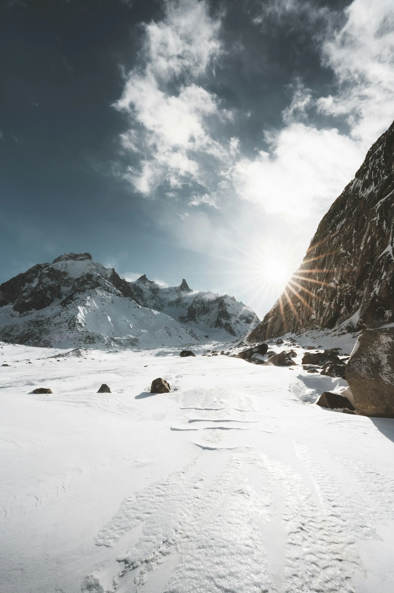

Photo · Martin MassonTHE SAME GLACIER, UNDER SNOW
Same spot, deep winter. Snowshoes on, footprints few, the whole scene turned silent and white.
Exact same access as the summer version. Montenvers train, hike up. But bring snowshoes. The trail gets covered fast and you'll sink without them.
The icefall textures read differently under fresh snow. Everything looks quieter, cleaner, a bit more alien. Go on a clear morning after a storm if you can time it.